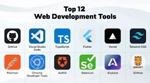

Joshua Obeng
About Me
Hello! I'm John Smith, a passionate web developer based in Provo, Utah. I'm currently enrolled in the WDD 131 course to deepen my understanding of dynamic web fundamentals.
I have a background in computer science and love creating meaningful digital experiences that solve real-world problems.
When I'm not coding, you can find me hiking in the beautiful Utah mountains, reading tech blogs, or contributing to open-source projects.
I believe that continuous learning is the key to staying relevant in the ever-evolving field of web development.
Web Development Resources

Here are some of my favorite resources for learning and mastering web development:
- MDN Web Docs - Comprehensive documentation
- freeCodeCamp - Interactive coding challenges
- CSS-Tricks - Advanced CSS techniques
- The Odin Project - Full-stack curriculum
- web.dev - Best practices from Google